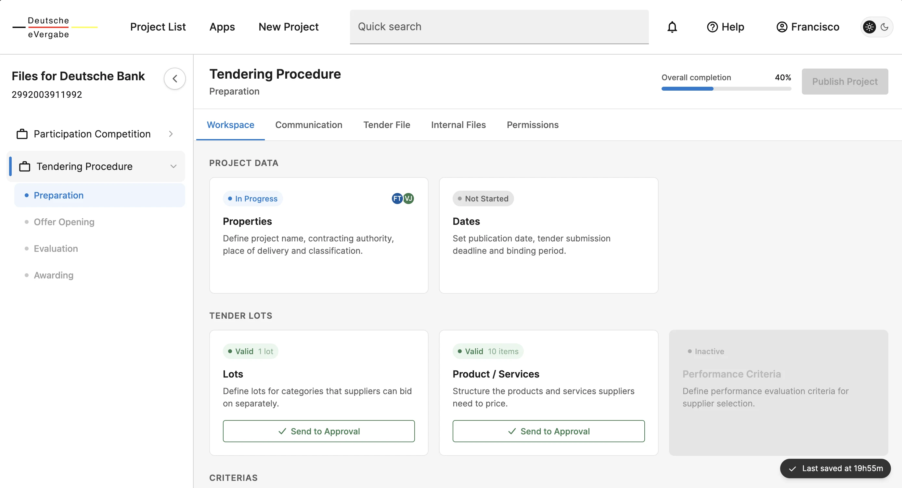
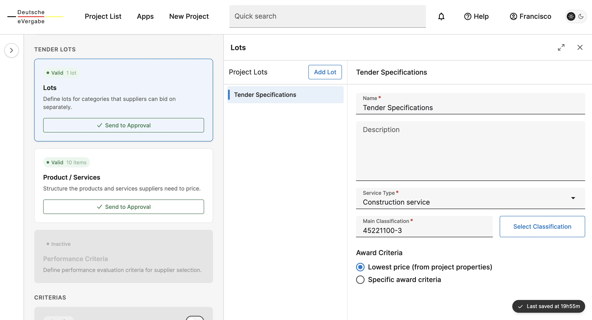
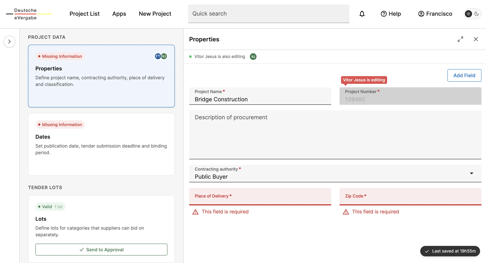

From linear wizard to workspace
01 · Context
Where UX stopped evolving
Organizations use tendering platforms to create and award contracts, yet the sector has been stagnant due to outdated tech and risk-aversion.
Before touching a single screen, I ran a market study across six platforms — Vortal, Mercell, Bonfire, Jaggaer, Proactis and SAP Ariba — to understand what's broken in tendering software, why it has stayed broken, and where the opportunity was. Then I redesigned our tender creation experience around what I found.
02 · Research
Every major platform replicates paper processes behind a new interface. Two structural forces lock this in: legacy architecture and regulation treated as form design, with the EU eForms schema (40 notice types, hundreds of fields) surfaced directly to the people who just want to buy something.
Tender creation follows one of these patterns:
Sequential wizard
Discrete steps: General → Lots → Documents → Suppliers → Review → Publish.
Forces sequential logic onto a non-sequential task. Back-navigation risks data loss; mid-flow changes break the flow.
Proactis · Mercell · JaggaerSingle-page accordion
All sections visible but collapsed, with anchor navigation. Measurably faster than wizards.
Data still hides behind collapsed panels; errors point to anchors instead of natural flow recovery.
Vortal · SAP Ariba03 · Principles
What the research demanded
Decide vs. fill
Tendering decisions are contextual, not isolated. Unlike routine data entry, inputs are often interdependent, relying on their relationship with information already provided.
Invisible compliance
Instead of forcing users to speak the 'language of the schema', the eForms schema should be invisible to buyers and mapped behind the scenes, ensuring errors are caught early and in plain English.
Intelligent scaling
Filling 60 fields for 10 lots is too much repetitive work. A system should handle data inheritance and consistency checks automatically.
State persistence is trust
A reliable system must guarantee that work is safe. Autosave, visible drafts, and session recovery are the foundation of this trust, preventing frustration and ensuring a seamless experience.
04 · The redesign
A workspace, not a wizard
The research showedTendering is parallel, but wizards force it to be sequential.
I redesigned the experience as a modular workspace where users can edit any part at any time. With all module states visible at once, we eliminated the 'step-by-step' trap and provided a clear view of the entire project.

Define once, fill everywhere
The research showedA 10 lot tender shouldn't mean 60 repetitive tasks.
You define the common structure once, and every lot is automatically filled. You only edit what's different.

Work that never disappears
The research showedInconsistent autosave is the single fastest way to lose a buyer's trust.
The system continuously autosaves with a visible timestamp, paired with validation that arrives at the right moment, as guidance rather than punishment.

05 · Outcome
Where it landed
The redesign reframed tender creation from a compliance form into a working environment, a shift validated against the three dominant market patterns and the friction points the research exposed. The full interactive prototype covers the multi-project preparation flow end-to-end.